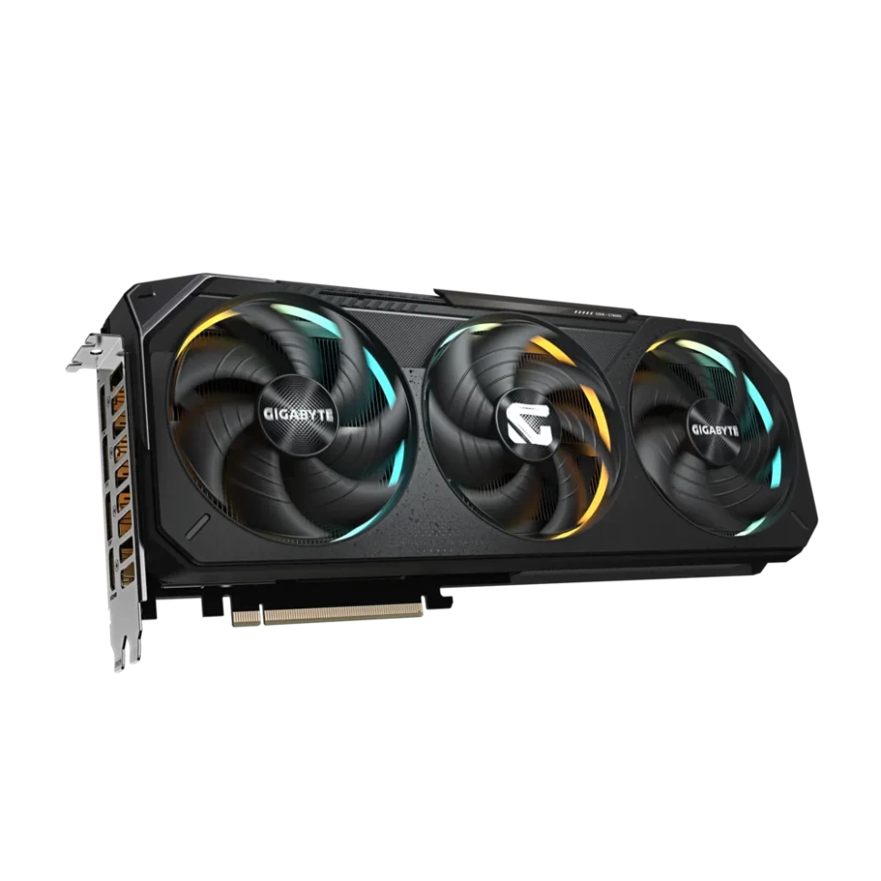

|

Видеокарта рассчитывает графику в играх и 3D-программах. Это самый крупный и энергозатратный элемент в системе.
Критерии проверки перед покупкой:
| Параметр |
Что проверить в характеристиках |
| Длина видеокарты |
Сравнить длину карты в мм с максимальной допустимой длиной в корпусе. |
| Разъёмы питания |
Проверить наличие кабелей 8-pin PCIe или 12V-2x6 у блока питания. |
| Слоты расширения |
Убедиться, что толстая карта (2.5–3.5 слота) не перекрывает нижние провода. |
|